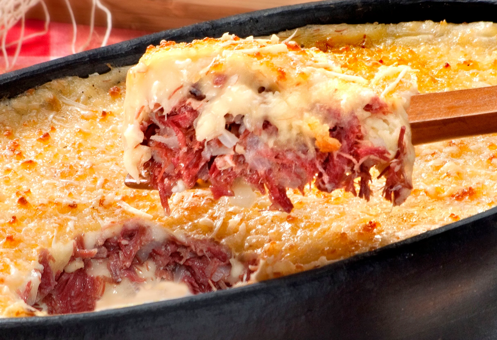

Escondidinho de Carne Seca

Ingredientes:
1 kg de mandioca cozida
1 lata de creme de leite com soro
2 colheres de margarina
1/2 kg de carne-seca dessalgada e cozida
1 cebola média picadinha
4 dentes de alho esmagados
2 tomates sem casca e picados
sal e pimenta a gosto
queijo ralado a gosto
Modo de preparo:
1.Esprema a mandioca ainda quente e leve em uma panela com a margarina e sal.
2.Quando estiverem bem misturados acrescente o creme de leite, misture e reserve.
3.Refogue a cebola e o alho em um fio de azeite.
4.Acrescente a carne-seca desfiada e deixe fritar um pouco.
5.Acrescente os tomates e deixe cozinhar até ficarem murchos e acerte o sal se achar necessário.
6.Em um refratário untado com azeite, coloque uma camada do purê de mandioca, a carne seca e termine com o
restante do purê.
7.Polvilhe com queijo parmesão ralado e leve ao forno pra gratinar.